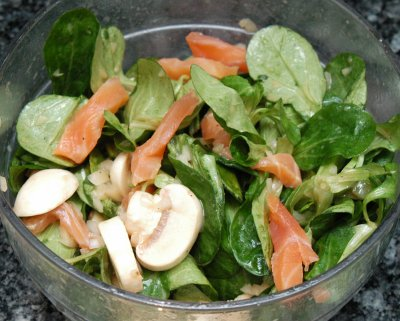

| Zutaten für 4 Personen: | |
| 100 g | Nüsslisalat |
| 100 g | Champignons |
| wenig | Zitronensaft |
| 4 Scheiben | Rauchlachs |
| Sauce | |
| 2 | Schalotten |
| 1 El | Zitronensaft |
| 1 El | Rotweinessig |
| 1 Tl | scharfer Senf |
| 4 El | Olivenöl |
| Salz | |
| schwarzer Pfeffer aus der Mühle | |
Zubereiten: 15 Minuten
Den Nüsslisalat gründlich waschen und gut abtropfen lassen.
Die Champignons rüsten, in feine Scheibchen schneiden und sofort mit etwas Zitronensaft mischen, damit sie sich nicht braun verfärben.
Die Lachsscheiben in feine Streifen schneiden.
Für die Sauce die Schalotten schälen und fein hacken. Zitronensaft, Essig, Senf, Olivenöl, Salz und Pfeffer verrühren. Die Schalotten beigeben.
Unmittelbar vor dem Servieren den Nüsslisalat, die Champignons sowie die Hälfte der Rauchlachsstreifen sorgfältig mit der Sauce mischen.
Den Salat mit den restlichen Rauchlachsstreifen ausgarnieren.
11 g Eiweiss, 22 g Fett, 2 g Kohlenhydrate, 253 Kalorien oder 1057 Joule
d'Chuchi Heft 6, November 1997 Seite 24
"So einen Salat darfst Du mir jederzeit wieder mal machen!" Sandra, 22.5.2004
@LINKBACK_TAG@ @WAKELOCK@